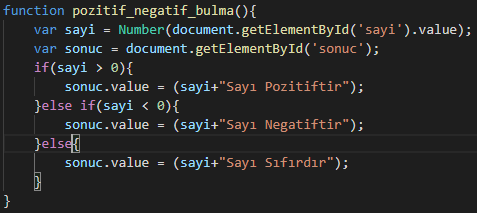

function pozitif_negatif_bulma(){
var sayi = Number(document.getElementById('sayi').value);
var sonuc = document.getElementById('sonuc');
if(sayi > 0){
sonuc.value = (sayi+"Sayı Pozitiftir");
}else if(sayi < 0){
sonuc.value = (sayi+"Sayı Negatiftir");
}else{
sonuc.value = (sayi+"Sayı Sıfırdır");
}
}
